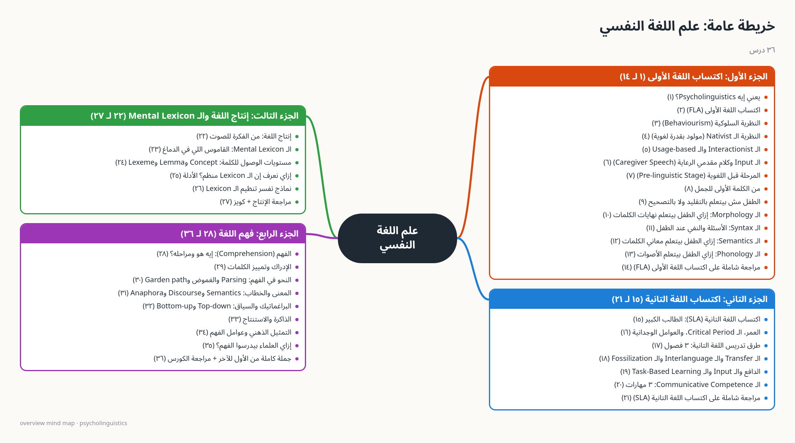

🧠
كورس Psycholinguistics
إزاي العقل بيكتسب اللغة وبينتجها وبيفهمها. 36 درس في 4 أجزاء.
🧠 شوف الخريطة الذهنية الشاملة للكورس

📚 ملفات PDF إضافية للكورس
📄 علم اللغة النفسي، الدروس 1 إلى 3: إنجليزي مبسط📄 علم اللغة النفسي، الدروس 1 إلى 3: إنجليزي + مصري📄 علم اللغة النفسي، الدروس 1 إلى 3: ملخصاتتقدمك ·
الجزء الأول: اكتساب اللغة الأولى
🧠
الدرس 1: يعني إيه Psycholinguistics؟📊 A1
👶
الدرس 2: اكتساب اللغة الأولى (FLA)📊 A1
🍼
الدرس 3: النظرية السلوكية (Behaviourism)📊 B1
🧬
الدرس 4: النظرية الـ Nativist (مولود بقدرة لغوية)📊 B1
🤝
الدرس 5: الـ Interactionist والـ Usage-based📊 B1
🗣️
الدرس 6: الـ Input وكلام مقدمي الرعاية (Caregiver Speech)📊 B1
👶
الدرس 7: المرحلة قبل اللغوية (Pre-linguistic Stage)📊 B1
🗣️
الدرس 8: من الكلمة الأولى للجمل📊 B1
🧠
الدرس 9: الطفل مش بيتعلم بالتقليد ولا بالتصحيح📊 B1
🧩
الدرس 10: الـ Morphology: إزاي الطفل بيتعلم نهايات الكلمات📊 B1
❓
الدرس 11: الـ Syntax: الأسئلة والنفي عند الطفل📊 B1
💡
الدرس 12: الـ Semantics: إزاي الطفل بيتعلم معاني الكلمات📊 B1
🔊
الدرس 13: الـ Phonology: إزاي الطفل بيتعلم الأصوات📊 B1
🔁
الدرس 14: مراجعة شاملة على اكتساب اللغة الأولى (FLA)📊 B2
الجزء التاني: اكتساب اللغة التانية
🌍
الدرس 15: اكتساب اللغة التانية (SLA): الطالب الكبير📊 B1
🎂
الدرس 16: العمر، الـ Critical Period، والعوامل الوجدانية📊 B1
🏫
الدرس 17: طرق تدريس اللغة التانية: ٣ فصول📊 B1
🔀
الدرس 18: الـ Transfer والـ Interlanguage والـ Fossilization📊 B2
🎯
الدرس 19: الدافع والـ Input والـ Task-Based Learning📊 B1
✏️
الدرس 20: الـ Communicative Competence: ٣ مهارات📊 B1
🔁
الدرس 21: مراجعة شاملة على اكتساب اللغة التانية (SLA)📊 B2
الجزء التالت: إنتاج اللغة والـ Mental Lexicon
🗣️
الدرس 22: إنتاج اللغة: من الفكرة للصوت📊 B1
📖
الدرس 23: الـ Mental Lexicon: القاموس اللي في الدماغ📊 B1
🔍
الدرس 24: مستويات الوصول للكلمة: Concept وLemma وLexeme📊 B2
🕵️
الدرس 25: إزاي نعرف إن الـ Lexicon منظم؟ الأدلة📊 B1
🧩
الدرس 26: نماذج تفسر تنظيم الـ Lexicon📊 B2
🏁
الدرس 27: مراجعة الإنتاج + كويز📊 B1
الجزء الرابع: فهم اللغة
👂
الدرس 28: الفهم (Comprehension): إيه هو ومراحله؟📊 A1
🔊
الدرس 29: الإدراك وتمييز الكلمات📊 B1
🌿
الدرس 30: النحو في الفهم: Parsing والغموض وGarden path📊 B2
🧵
الدرس 31: المعنى والخطاب: Semantics وDiscourse وAnaphora📊 B1
🎭
الدرس 32: البراغماتيك والسياق: Top-down وBottom-up📊 B2
💭
الدرس 33: الذاكرة والاستنتاج📊 B1
🏗️
الدرس 34: التمثيل الذهني وعوامل الفهم📊 B2
🔬
الدرس 35: إزاي العلماء بيدرسوا الفهم؟📊 B2
🏆
الدرس 36: جملة كاملة من الأول للآخر + مراجعة الكورس📊 B1
شرح عربي إضافي (خارجي)
لينكات برّه الموقع بتفتح في صفحة جديدة، بشرح بالعربي. مش جزء من الكورس.
🔗 يوتيوب: مقدمة علم اللغة النفسي (عربي)🔗 يوتيوب: علم نفس اللغة (عربي)